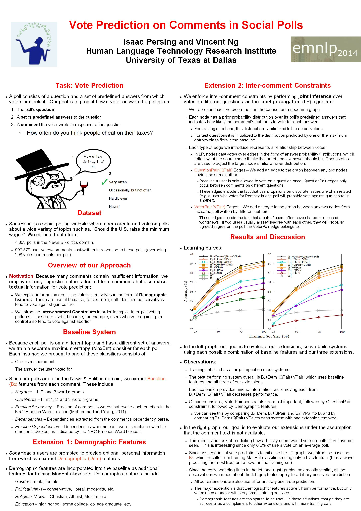

Vote Prediction on Comments in Social Polls
Isaac Persing and Vincent Ng.
Proceedings of the 2014 Conference on Empirical Methods in Natural Language Processing, pp. 260-269, 2014.
Click here for the PDF
version.
Abstract
A poll consists of a question and a set of predefined answers from which voters can select. We present the new problem of vote prediction on comments, which involves determining which of these answers a voter selected given a comment she wrote after voting.
To address this task, we exploit not only the information extracted from the comments but also extra-textual information such as user demographic information and inter-comment constraints.
In an evaluation involving nearly one million comments collected from the popular SodaHead social polling website, we show that
a vote prediction system
that exploits only textual information
can be improved significantly when extended
with extra-textual information.
Dataset
The dataset used in this paper is available from
this page.
BibTeX entry
@InProceedings{Persing+Ng:14b,
author = {Isaac Persing and Vincent Ng},
title = {Vote Prediction on Comments in Social Polls},
booktitle = {Proceedings of the 2014 Conference on Empirical Methods in Natural Language Processing},
pages = {1127--1138},
year = 2014}
